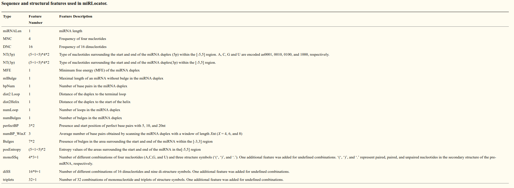

MiRNA Selection¶
This module selects a subset of miRNA candidates that are regarded as promising miRNAs, according to the high-throughput criteria and/or using an machine learning (ML)-based approach. For the latter miRNA selection approach, iwa-miRNA builds a one-class Support Vector Machine (SVM) classifier to predict if tested miRNA candidates are potentially real miRNAs or not. iwa-miRNA is user friendly, in that users can tune corresponding parameters according to the sRNA-Seq data at hand. A set of default parameters, derived from our own analysis experience, are also provided to assist non-expert users within their analyses.
| Tools | Input | Output | Applications |
|---|---|---|---|
miRNASelection |
Output from miRNATranslate | Selected miRNAs | Select promising miRNA candidates |
miRNASelection¶
Input¶
- Candidate miRNAs generated by miRNATranslate: A comprehensive collection of miRNA candidates from
miRNATranslate. - Read abundance data generated by miRNAPredict: Read sequences and expression levels from
miRNAPredict. - The detailed parameters of high-throughput criteria and machine learning-based approach.
Output¶
- Selected miRNAs based on two methods: An annotation file containing miRNA information and classification results of high-throughput criteria and/or machine learning-based approaches.
How to use this function¶
For selections, see the following figure:

The annotation file containing the information of miRNA precursors, mature miRNAs and the classification results will be returned. For complete preview of this output, please refer to Output in miRNASelection, the following figure shows a screenshot for the output.
Note: The meaning of each column in the file is as follows:
- Precursors: The raw name of miRNA precursors;
- ID: The modified name of miRNA precursors. miRNAs from databases remain their raw names and miRNAs from sRNA-Seq got a new name with species-MIR-N{number}{letter};
- HTcriteria: The true/false means whether miRNAs meet the High-throughput (HT) criteria or not;
- One_class_SVM: miRNA categories defined according to the predictions of one-class SVM algorithm, which is trained using miRNAs in the positive dataset. “remained_positive”: miRNAs in the positive dataset are predicted as miRNAs. “removed_positive”: miRNAs in the positive dataset are not predicted as miRNAs. “novel_prediction”: miRNA candidates are predicted as miRNAs, and “others”: miRNA candidates are not predicted as miRNAs.
- Extended_stem_loop_loc, Extended_stem_loop_seq, Extended_stem_loop_len: The location, sequence (5’->3’), length of miRNA precursors;
- Stem_loop_loc, Stem_loop_seq: The location, sequence (5’->3’) of stem-loop sequence;
- Loc5p, Seq5p, Len5p: The location, sequence (5’->3’), length of 5’-arm miRNAs;
- Loc3p, Seq3p, Len3p: The location, sequence (5’->3’), length of 3’-arm miRNAs;
- Mature_arm: The possible arm of mature miRNA inferred from database query results (miRNARetrieval) and the sequence abundance (miRNAPredict);
- Source: “1”, “2”, “3”, “4” represent annotated miRNAs from miRBase, PmiREN, sRNAanno and Psgenes databases, respectively. “p” denotes miRNAs predicted by
miRNAPredictfunction in iwa-miRNA.- TPM5p, TPM3p: The TPM (Transcripts per million) abundance of 5’-arm and 3’-arm miRNAs;
- Stem_loop_len, Stem_loop_MFE, Stem_loop_AMFE: The length, minimum free energy (MFE), adjusted MFE of stem-loop sequences;
- The_total_abundance: The total TPM abundance of miRNA precursors;
- The_number_of_sequences_in_miRNA.miRNA._and_3nt_variant_region, The_number_of_sequences_in_pre.miRNAs: Number of collapsed reads belonged to miRNA-miRNA*-isomiRs (miRNA isoforms with 3nt positional variants) and miRNA precursors;
- Abundance_bias: The sum of the TPM of miRNA isoforms (isomiRs) was divided by the TPM of miRNA precursors;
- Strand_bias: The sum of the TPM of sequences matching miRNA precursors was divided by that matching both strands;
- RNAfold: Whether miRNAs have an effective RNA structure predicted by RNAfold. The miRNA/miRNA* duplexes with up to five mismatched positions (including up to three nucleotides in asymmetric bulges) are considered to have an effective RNA structure;
- Centroidfold: Whether miRNAs have an effective RNA structure predicted by Centroidfold. The miRNA/miRNA* duplexes with up to five mismatched positions (including up to three nucleotides in asymmetric bulges) are considered to have an effective RNA structure;
- Mean: The average TPM of one miRNA across all sRNA-Seq datasets;
- Max: The max TPM of one miRNA across all sRNA-Seq datasets;
- Samples: The number of samples with TPM≥1.
we have renamed the newly predicted miRNA with a uniform naming scheme and the already annotated miRNA from databases still use the previous names. The final name was included in the ID column.
Detailed explanation¶
High-throughput (HT) criteria: This represents the revised criteria for plant miRNA annotation [1], including the length of foldbacks, effective RNA structure of miRNA:miRNA duplex (up to five mismatched positions, only three of which are nucleotides in asymmetric bulges), abundance bias (the sum of the TPM of miRNA, miRNA*,and isomiRs (at most three-nucleotides positional variants) was divided by the TPM of miRNA precursors), strand bias (The sum of the TPM of reads matching the sense strand was divided by that matching both strands), and the length of miRNAs.
Machine learning (ML)-based approaches: This represents a support vector machine (SVM)-based method for classifying miRNA candidates. Specifically, the features of miRNA precursors and miRNAs are extracted according to previously published tools/scripts (Meng et al.-https://github.com/kobe-liudong/miPlantPreMat [2], Cui et al.-https://github.com/cma2015/miRLocator [3], and high-throughput criteria) and consist of 218 sequence features, 383 structural features, and expression features (i.e., TPM values across all samples). Positive samples from the databases or user input are used to train the model (one class SVM method in e1071 R package). The miRNAs were categorized based on the model.
- The detailed features used for model construction are described as follows :
The screenshot of 400 features recorded in miRLocator [2]:
The screenshot of 152 features mentioned in miPlantPreMat [3]:
| [1] | Axtell MJ, Meyers BC. Revisiting criteria for plant microRNA annotation in the era of big data. Plant Cell 2018;30:272-84. |
| [2] | (1, 2) Meng J, Liu D, Sun C, Luan Y. Prediction of plant pre-microRNAs and their microRNAs in genome-scale sequences using structure-sequence features and support vector machine. BMC Bioinformatics 2014;15:423. |
| [3] | (1, 2) Cui H, Zhai J, Ma C. miRLocator: machine learning-based prediction of mature microRNAs within plant pre-miRNA sequences. PLoS One 2015;10:e0142753. |